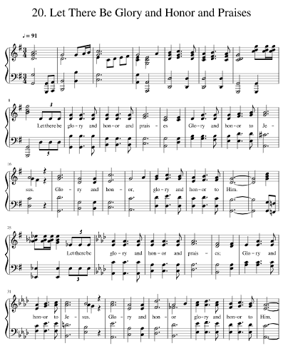

|
�@ |
�@ |
|
Let there be glory and honor and praises, |
�@�@ち�L�Q�M�a模�霉|�g�A
|
|
�@https://musescore.com/user/27303807/scores/5191206  |
|
|
�@ |
�@ |

https://youtu.be/jwR0aYETfr4 -
Let there be glory and Honor and praises
https://youtu.be/TJWSyf5ODqA -
Kent Henry- Let There Be Glory And Honor And Praises (Hosanna! Music)
https://youtu.be/TJWSyf5ODqA
| Text: | Let There Be Glory and Honor and Praises |
| Author: | James Greenelsh |
| Author: | Elizabeth Greenelsh |
| Tune: | LET THERE BE GLORY |
| Composer: | James Greenelsh |
| Composer: | Elizabeth Greenelsh |
Tune Information
| Title: | LET THERE BE GLORY |
| Composer: | Elizabeth Greenelsh |
| Composer: | James Greenelsh |
| Key: | A♭ Major |
| Copyright: | Copyright 1978 by Integrity's Hosanna! Music. |